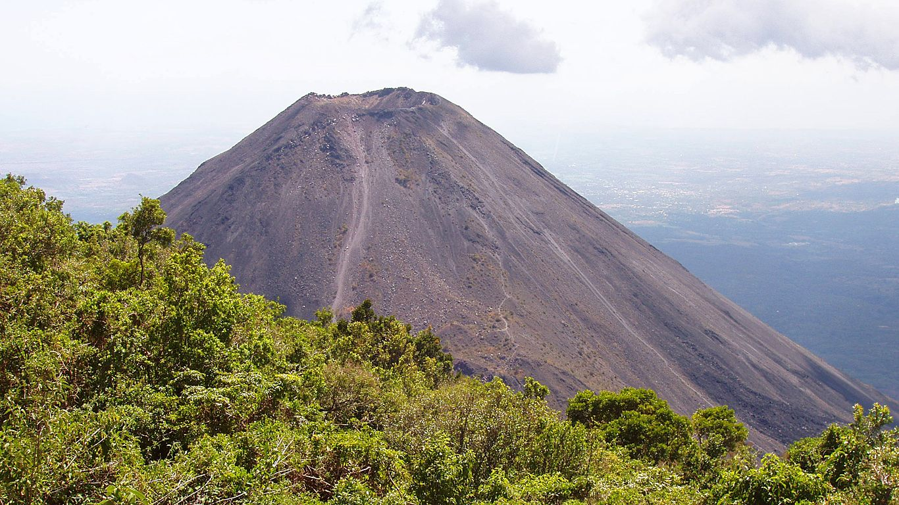

В данном разделе находятся все вулканы этой страны на нашем сайте.
Вулкан Исалько (Izalco)

Одним из популярных и наиболее посещаемых в Сальвадоре считают парк Серро-Верде, но не менее популярны
сегодня череда вулканов в районе Санта-Аны. Немного западнее от Серро-Верде можно увидеть конус одного из
относительно молодых вулканов Исалько (Izalco). Вулкан идеально сочетается с окружающей местностью и
создает особый колорит ярким контрастом с морем.
Можно сказать, что Исалько появился просто на глазах, настолько быстро и неожиданно, что сегодня даже
сложно поверить, что всего пару веков назад его не было. Для вулкана это не возраст. Вулкан появился из
небольшой побочной кальдеры известного вулкана Санта-Ана в 1770 году. Спустя менее 100 лет вулкан вырос
так, что его стало видно с моря, и он стал своеобразным маяком для кораблей. И только где-то к 1960 году
извержения Исалько прекратились. При чем произошло это также быстро и неожиданно, как и началось.
Однако, в 1966 году извержение уничтожило деревню Матасано и повлекло гибель 56 человек. После этого
активность снизилась, но периодически происходят выбросы вулканического пепла на высоту до 300 м. За свою
активность вулкан был прозван Тихоокеанским маяком или маяком Центральной Америки. Почвы на склонах
вулкана достаточно плодородны, и, несмотря на риск, используются в сельскохозяйственных нуждах (кофе,
какао, сахарный тростник и пр.). До введения в Сальвадоре американского доллара в 2001—2002 гг, на
банкноте в 10 колонов был изображён вулкан Исалько. На сегодняшний день вулкан Исалько – одна из главных
достопримечательностей Сальвадора, привлекающих тысячи туристов своей необыкновенно правильной формой,
природой и разнообразием диких животных. Для всех желающих регулярно проводятся экскурсии по склонам
к самому кратеру Исалько.
Вулкан Аконкагуа (Aconcagua) — потухший вулкан в Аргентине, самый высокий в мире батолит. Высота 6962
метров. Является высшей точкой Американского континента, Южной Америки, западного и южного полушарий.
Происхождение названия горы точно неизвестно, существующие выводят его из арауканского языка («с другой
стороны реки Аконкагуа») или от Ackon Cahuak, что на языке кечуа означает «Каменный страж».
Расположен вулкан в центральной части Анд (Главная Кордильера) на территории Аргентины. Ограничена
горными хребтами Валье-де-лас-Вакас на севере и востоке и Валье-де-лос-Орконес-Инфериор на юге и западе.
Гора находится на территории Национального Парка Аконкагуа. Гора имеет множество ледников, самые большие
из них — северо-восточный (Польский ледник) и восточный.
В альпинизме Аконкагуа считается технически лёгкой горой, если осуществлять восхождение по северному
склону. При восхождении влияние высоты ощутимо, атмосферное давление на вершине примерно около 40 % от
давления на уровне моря. Однако использование кислородных баллонов при восхождении не требуется.
Минимальное время прохождения маршрута — 5 часов 45 минут, зафиксировано в 1991.
Второй маршрут — через Польский ледник. Приближение к горе идёт через долину Вакас, затем — подъём до
основания Польского ледника, затем — пересечение с первым маршрутом для восхождения на вершину горы.
Маршруты через Южный и Юго-западный горные хребты считаются очень сложными для восхождения.
Первая известная в истории попытка восхождения на гору было совершена в 1897 экспедицией англичанина
Эдварда Фицджеральда. 14 января вершина была достигнута швейцарцем Маттиасом Цурбриггеном, несколько дней
спустя — двумя другими членами экспедиции.
В настоящее время перед восхождением на гору альпинисты должны купить пропуск у местных властей
провинциального парка Аконкагуа в Мендосе. Цены изменяются в зависимости от сезона.
Восхождение на гору по простейшему маршруту осуществляется через следующие промежуточные точки (данные о
высоте приблизительны): Мост Инков (Puente Del Inca) — 2719 м.; Конфлуэнсия (Confluencia) — 3500 м.;
Пласа-де-Мулас (Plaza de Mulas) — 4370 м.; Пласа Канада (Plaza Canada) 24 — 4910 м.; Нидо-де-Кондорес
(Nido de Cóndores) — 5380 м.; Берлин (Berlín) — 5780 м. (Лагерь закрыт по причине захламлённости); Олера
(Holera) — 5900 м.Кумбре (Cumbre) (вершина) — 6962 м.


 Вулкан Исалько на Гугл карте
Вулкан Исалько на Гугл карте